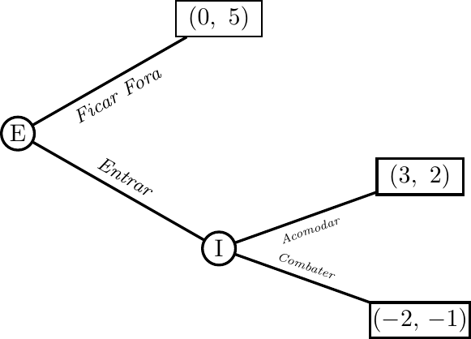

Microeconomia
Aula 24 — Jogos Sequenciais e o Modelo de Stackelberg
ISCAL - IPL
Jogos Sequenciais
Da Forma Normal à Forma Extensiva
Na aula anterior, analisámos jogos em forma normal — decisões simultâneas representadas em matriz.
Muitas situações económicas são sequenciais: um jogador age primeiro, o outro observa e responde.
| Forma Normal | Forma Extensiva | |
|---|---|---|
| Timing | Simultâneo | Sequencial |
| Representação | Matriz de payoffs | Árvore de decisão |
| Conceito solução | Equilíbrio de Nash | Indução para trás |
| Informação | Sem observação | Observação da jogada anterior |
Note
A forma extensiva acrescenta estrutura temporal ao jogo. Quem move primeiro tem informação comprometida — e quem move depois tem mais informação mas menos iniciativa.
A Árvore de Decisão
Uma árvore de decisão representa:
- Nós de decisão — pontos onde um jogador escolhe
- Ramos — as acções disponíveis em cada nó
- Folhas — resultados finais com os payoffs \((π_1,\ π_2)\)
- Ordem das jogadas — lê-se da esquerda (raiz) para a direita (folhas)
O método de solução é a indução para trás (backward induction):
Important
Resolver o jogo de trás para a frente: começar nas folhas e determinar a escolha óptima do último jogador; dado isso, determinar a escolha óptima do penúltimo; e assim sucessivamente até à raiz.
Indução para Trás: Jogo de Entrada
O Jogo de Entrada no Mercado
Uma empresa Entrante pondera entrar num mercado onde existe uma empresa Incumbente.
(payoffs: Entrante, Incumbente)
Solução por Indução para Trás
Passo 1 — O que faz o Incumbente se a Entrante entrar?
- Combater: payoff \(= -1\)
- Acomodar: payoff \(= 2\)
\(2 > -1\) \(\Rightarrow\) Incumbente acomoda. A ameaça de combater não é credível.
Passo 2 — O que faz a Entrante, antecipando a acomodação?
- Entrar (sabendo que Incumbente acomoda): payoff \(= 3\)
- Ficar Fora: payoff \(= 0\)
\(3 > 0\) \(\Rightarrow\) Entrante entra.
Important
Resultado por indução para trás: (Entrar, Acomodar) = (3, 2)
A ameaça de combater é não credível: o Incumbente preferirá sempre acomodar ex-post. Um jogador racional não acredita em ameaças que o ameaçador não tem incentivo a cumprir.
Ameaças Credíveis e Não Credíveis
O jogo de entrada ilustra um princípio central:
Note
Ameaça credível: acção que o ameaçador tem incentivo a executar quando chega o momento, independentemente do que disse antes.
Ameaça não credível: acção que o ameaçador prefere não executar quando chega o momento — racionalmente ignorada pelo rival.
O Incumbente pode dizer “se entrar, combato” — mas a Entrante sabe que, uma vez dentro, o Incumbente preferirá acomodar. As palavras não chegam; só os incentivos ex-post contam.
Tip
Aplicação: um monopolista que ameaça baixar preços drasticamente para afastar rivais precisa de tornar essa ameaça credível — por exemplo, através de investimento em capacidade que torna o combate rentável.
O Modelo de Stackelberg
Stackelberg como Jogo Sequencial
O modelo de Stackelberg aplica a lógica dos jogos sequenciais ao oligopólio de quantidades:
- Líder (Empresa 1): escolhe \(q_1\) primeiro, de forma observável
- Seguidor (Empresa 2): observa \(q_1\) e escolhe \(q_2\) a seguir
- Mesma estrutura de mercado da aula anterior: \(P = 30 - (q_1+q_2)\), \(Cmg = 6\)
Note
A diferença face a Cournot é apenas o timing: em Cournot, as decisões são simultâneas e cada empresa toma a quantidade da outra como dada. Em Stackelberg, o líder conhece a função de reacção do seguidor e optimiza em função dela.
Passo 1 — A Função de Reacção do Seguidor
O seguidor resolve o seu problema exactamente como em Cournot, dado \(q_1\) observado:
\[\Pi_2 = (30 - q_1 - q_2)\,q_2 - 6\,q_2\]
\[\frac{\partial \Pi_2}{\partial q_2} = 24 - q_1 - 2q_2 = 0 \quad\Rightarrow\quad \boxed{q_2^*(q_1) = 12 - \frac{q_1}{2}}\]
Esta é a mesma função de reacção da aula anterior — o líder sabe que o seguidor a irá usar.
Passo 2 — O Líder Internaliza a Reacção do Seguidor
O líder substitui \(q_2^*(q_1)\) no seu próprio lucro:
\[\Pi_1 = \bigl(30 - q_1 - q_2^*(q_1)\bigr)\,q_1 - 6\,q_1\]
\[= \left(30 - q_1 - \left(12 - \frac{q_1}{2}\right)\right)q_1 - 6q_1 = \left(12 - \frac{q_1}{2}\right)q_1\]
\[\Pi_1 = 12\,q_1 - \frac{q_1^2}{2}\]
Condição de primeira ordem:
\[\frac{d\Pi_1}{dq_1} = 12 - q_1 = 0 \quad\Rightarrow\quad \boxed{q_1^* = 12}\]
Passo 3 — Equilíbrio de Stackelberg
Com \(q_1^* = 12\), o seguidor responde:
\[q_2^* = 12 - \frac{12}{2} = 6\]
Resultados de equilíbrio:
\[Q^*_S = 12 + 6 = 18 \qquad P^*_S = 30 - 18 = 12\]
\[\Pi_{\text{líder}} = (12-6)\times 12 = 72 \qquad \Pi_{\text{seguidor}} = (12-6)\times 6 = 36\]
Important
Vantagem do primeiro movente: o líder ganha 72 — tanto quanto o monopolista — enquanto o seguidor fica com apenas 36, abaixo dos 64 de Cournot.
O líder usa a quantidade como compromisso: ao produzir muito (12), força o seguidor a produzir pouco (6).
Stackelberg vs. Cournot — Diagrama

Intuição do Primeiro Movente
Por que vale a pena ser o líder?
Em Cournot, se a Empresa 1 aumentasse unilateralmente a sua produção de 8 para 12, o preço desceria e o lucro cairia (dado \(q_2 = 8\) fixo).
Em Stackelberg, o líder sabe que ao produzir 12, o seguidor responde com 6 (não com 8). O efeito adverso no preço é parcialmente compensado pela contracção do seguidor.
Note
O compromisso credível de produzir muito disciplina o rival. O líder renuncia à melhor resposta de Cournot, mas obtém um resultado melhor porque o seguidor ajusta em sentido contrário.
Esta é a essência da vantagem do primeiro movente em jogos de quantidades.
Comparação Final
Tabela Resumo: Quatro Estruturas
| Estrutura | \(Q\) | \(P\) | \(\Pi_1\) | \(\Pi_2\) |
|---|---|---|---|---|
| Monopólio (cartel) | \(12\) | \(18\) | \(72\) | \(72\) |
| Stackelberg | \(18\) | \(12\) | \(72\) | \(36\) |
| Cournot | \(16\) | \(14\) | \(64\) | \(64\) |
| Conc. Perfeita | \(24\) | \(6\) | \(0\) | \(0\) |
Important
Ordenações que sempre se verificam:
\(Q_m < Q_C < Q_S < Q_{cp}\) e \(P_m > P_C > P_S > P_{cp}\)
\(\Pi_{\text{líder}}^S > \Pi^C > \Pi_{\text{seguidor}}^S\)
O líder de Stackelberg ganha tanto quanto o monopolista — ao comprometer-se com produção elevada, captura toda a vantagem estratégica.
Cournot vs. Stackelberg: Síntese
Uma empresa Entrante pondera entrar num mercado onde existe uma empresa Incumbente. :::{.nonincremental} | | Cournot | Stackelberg | |—|—|—| | Timing | Simultâneo | Sequencial | | Hipótese sobre rival | \(q_j\) fixo (conjectura) | \(q_j = BR_j(q_i)\) (conhecida) | | Equilíbrio | Nash em quantidades | Backward induction | | \(q_{\text{líder}}\) vs \(q_C\) | \(q^C = 8\) | \(q_L^S = 12 > 8\) | | \(q_{\text{seguidor}}\) vs \(q_C\) | \(q^C = 8\) | \(q_F^S = 6 < 8\) | | \(\Pi_{\text{líder}}\) vs \(\Pi_C\) | \(64\) | \(72 > 64\) | | \(\Pi_{\text{seguidor}}\) vs \(\Pi_C\) | \(64\) | \(36 < 64\) | :::
Exercícios
Exercício 1 — Escolha Múltipla
No modelo de Stackelberg, o líder produz mais do que no equilíbrio de Cournot porque:
- O líder tem custos marginais mais baixos
- O líder sabe que o seguidor reduzirá a sua produção em resposta — o compromisso com quantidade elevada disciplina o rival
- O líder age simultaneamente com o seguidor e pode coordenar melhor
- O seguidor não observa a quantidade do líder e não consegue reagir
Solução — Exercício 1
- Falso — os custos são idênticos nos dois modelos
- (b) Verdadeiro — o líder internaliza a função de reacção do seguidor: sabe que produzir mais força o seguidor a produzir menos, atenuando o efeito negativo no preço. É a essência da vantagem do primeiro movente.
- Falso — Stackelberg é sequencial, não simultâneo
- Falso — o seguidor observa \(q_1\) antes de decidir; é precisamente isso que torna o compromisso do líder credível
Resposta: (b)
Exercício 2 — Escolha Múltipla
No jogo de entrada com payoffs (Entrante, Incumbente): Entrar+Combater = \((-2,\ -1)\); Entrar+Acomodar = \((3,\ 2)\); Ficar Fora = \((0,\ 5)\). Por indução para trás, o resultado é:
- Ficar Fora, porque o Incumbente ameaça combater
- Entrar + Combater, porque o Incumbente cumpre a ameaça
- Entrar + Acomodar, porque a ameaça de combater não é credível
- Indeterminado — há dois Equilíbrios de Nash
Solução — Exercício 2
Indução para trás:
- Se Entrante entrar, Incumbente escolhe: Combater \((-1)\) vs Acomodar \((2)\) \(\Rightarrow\) Acomodar
- Entrante antecipa Acomodar: Entrar \((3)\) vs Ficar Fora \((0)\) \(\Rightarrow\) Entrar
A ameaça de combater é não credível — o Incumbente não a executaria ex-post.
Resposta: (c)
Nota: existe um EN na forma normal em que Entrante fica fora com base na ameaça de combater — mas a indução para trás elimina esse EN por envolver estratégias não credíveis.
Exercício de Desenvolvimento
Dois produtores de aço, a Empresa 1 (líder) e a Empresa 2 (seguidor), operam no mercado com procura inversa \(P = 30 - (q_1 + q_2)\) e custo marginal \(Cmg = 6\) para ambas.
Alíneas:
- Derive a função de reacção do seguidor (Empresa 2), \(q_2^*(q_1)\).
- Substitua \(q_2^*(q_1)\) na função de lucro do líder e simplifique.
- Determine a quantidade óptima do líder \(q_1^*\) e a resposta do seguidor \(q_2^*\).
- Calcule \(Q^*_S\), \(P^*_S\), \(\Pi_{\text{líder}}\) e \(\Pi_{\text{seguidor}}\).
- Compare com o equilíbrio de Cournot da aula anterior (\(q^C = 8\), \(\Pi^C = 64\)). Quem ganha e quem perde com a liderança? Justifique.
- Complete a tabela com os quatro resultados: monopólio, Stackelberg, Cournot, concorrência perfeita.
Solução — Exercício de Desenvolvimento
a) \(\Pi_2 = (30-q_1-q_2-6)q_2\). CPO: \(24-q_1-2q_2=0\)
\[q_2^*(q_1) = 12 - \frac{q_1}{2}\]
b) \(\Pi_1 = \!\left(30-q_1-\!\left(12-\tfrac{q_1}{2}\right)-6\right)q_1 = \!\left(12-\tfrac{q_1}{2}\right)q_1 = 12q_1 - \tfrac{q_1^2}{2}\)
c) \(\dfrac{d\Pi_1}{dq_1} = 12 - q_1 = 0 \Rightarrow q_1^* = 12\)
\(q_2^* = 12 - 6 = 6\)
d) \(Q^*_S = 18\), \(P^*_S = 30-18 = 12\)
\(\Pi_{\text{líder}} = (12-6)\times 12 = 72\) \(\quad;\quad\) \(\Pi_{\text{seguidor}} = (12-6)\times 6 = 36\)
e) O líder ganha \(72 > 64\) (Cournot): ao comprometer-se com \(q_1=12\), força o seguidor a retrair-se para \(q_2=6\), capturando mais mercado. O seguidor perde: \(36 < 64\) (Cournot) — é penalizado por agir segundo, ficando com um mercado residual mais pequeno.
f)
| Estrutura | \(Q\) | \(P\) | \(\Pi_1\) | \(\Pi_2\) |
|---|---|---|---|---|
| Monopólio | \(12\) | \(18\) | \(72\) | \(72\) |
| Stackelberg | \(18\) | \(12\) | \(72\) | \(36\) |
| Cournot | \(16\) | \(14\) | \(64\) | \(64\) |
| Conc. Perfeita | \(24\) | \(6\) | \(0\) | \(0\) |

Microeconomia (Plano de Transição)